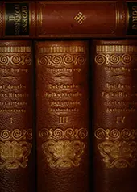
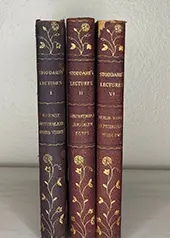
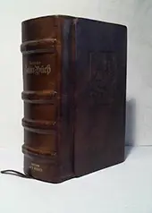
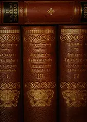
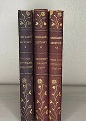
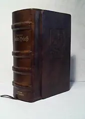

Jedes Buch ist bei Unikat, aber unsere Sammlung ist so gross, dass ihr am besten selber bei uns im Laden vorbeischauen solltet. Dort gibt es noch ganz viele tolle Bücher die nur darauf warten von euch entdeckt zu werden. Wenn ihr nach etwas bestiummtem sucht, könnt ihr uns auch jederzeit telefonisch erreichen.
Diese alten Bücher stammen überwiegend aus dem 19. und frühen 20. Jahrhundert und zeichnen sich durch ihre handwerkliche Verarbeitung und ihren zeittypischen Charakter aus. Leinen-, Halb- oder Ledereinbände, teils mit Prägungen oder Goldschnitt, machen jedes Exemplar zu einem individuellen Objekt mit Geschichte.
Die Bücher weisen altersbedingte Gebrauchsspuren auf. Es gibt leichte Abriebe, oder handschriftliche Einträge welche nicht als Mängel, sondern als Zeugnisse ihres bisherigen Lebens zu verstehen sind. Inhaltlich reichen die Werke von Literatur und Sachtexten bis hin zu historischen Ausgaben und seltenen Druckwerken.
Ob als Sammlerstück, zum Lesen oder als dekoratives Element: Alte Bücher bringen Zeit, Tiefe und Authentizität in jeden Raum.